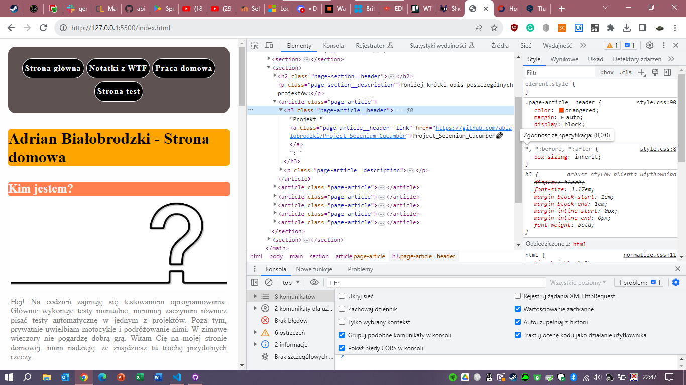
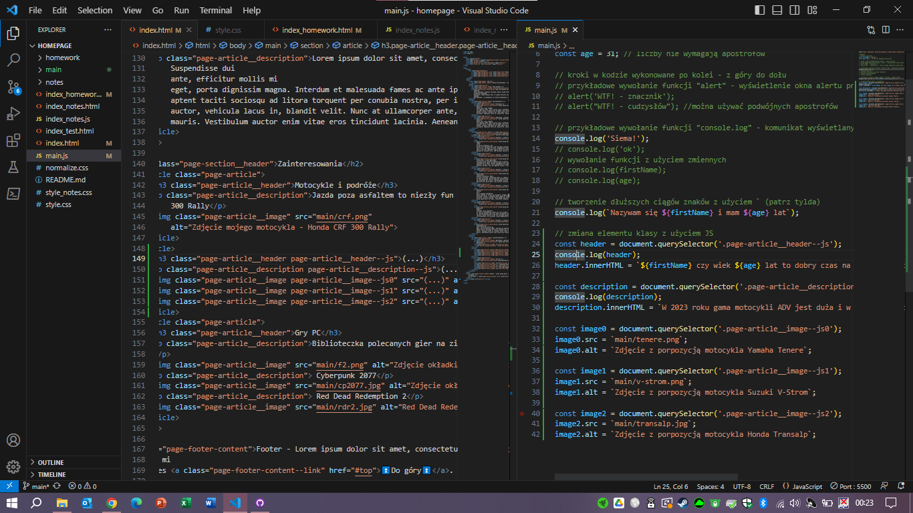

1-2. Stworzenie projeku
Zrzut utworzonego projektu i jego przykładowe stylowanie - może się zmienić^^:

Zrzut utworzonego projektu i jego przykładowe stylowanie - może się zmienić^^:
Zrzut rozwiązania zagadki:

Zrzut utworzonego schematu zmywania naczyń w programie draw.io:

Zrzut zmodyfikowanej zawartości strony Bankier.pl - fake:

Zrzut do utworzonej tablicy w Trello do śledzenia postępów podczas kursu:

Zrzut utworzonego konta GitHub oraz ekranu głównego GitHub Desktop:

Zrzut utworzonego repozytorium na GitHub:

Zrzut utworzonych commitów w projekcie:

Zrzut przebudowanego projektu wzbogaconego o dodatkowe strony i linki nawigacyjne do nich:

Zrzut przebudowanego projektu wzbogaconego o stylowanie dodatkowych klas (nagłówki/paragrafy/stopka) na stronie głównej:

Zrzut rozwiązania labiryntu:

Zrzut strony z przykładowym skryptem:

Zrzut strony z zawatością konsoli:

Zrzut przebudowanego projektu po ujednoliceniu z wykorzystaniem
standardów normalize.css:

Zrzut strony wystawionej przez serwer lokalny http://127.0.0.1:5500/index.html przy użyciu rozszerzenia do Visual Studio Code Live Server

Wdrożenie BEM do plików strony:
- głównej index.html,
- testowej index_test.html,
- pracy domowej index_homework.html
Dostosowanie styli: wyśrodkowanie treści i ograniczenie szerkości ich wyświetlania, co poprawia responsywność strony na urządzeniach mobilnych:
Pusty element wybranej klasy (to jest page-article__header--js; page-article__description--js; page-article__image--js[0-2]) zostaje uzupełniony za pomocą JS:
